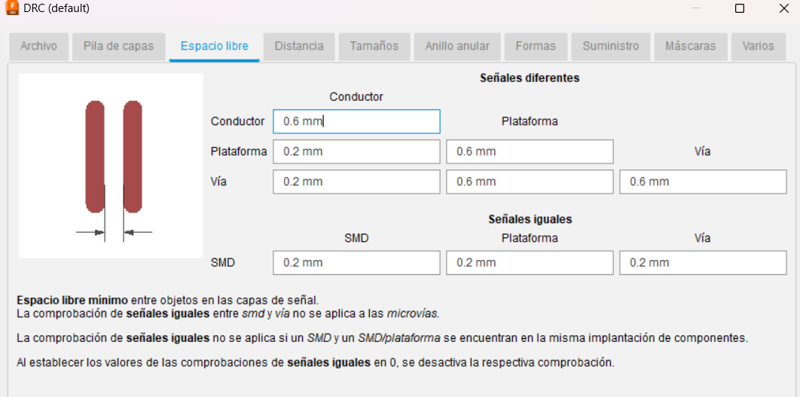
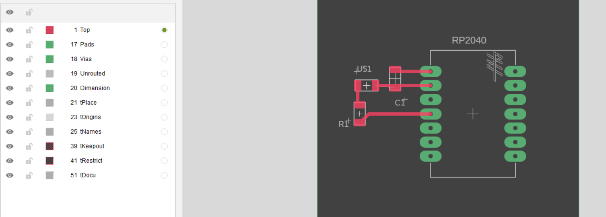

My Blog

Diseño Electronico
24/03/2024
Tinker/Maker mindset
En esta entrada de blog trataré de abarcar todo lo que pueda sobre dieseño electronico enfocandome solo en Fusion 360 espeficiamente la parte de electricidad.
Antiguamente llamado EAGLE, posteriormente adquirido por Autodesk y fusionado en su modelador llamado Fusion 360 ahora paso a llamarse "autodesk's Eagle for Fusion 360" lo cual en lo personal considero el nombre mas largo e inutil para un software.
Pa´ pronto
Dentro de las muchas cosas que me he dedicado a hacer durante mi periodo en el Fablab de Querétaro, ha sido especializarme en la parte electronica y programacion, ya que al ser ingeniero se me facilita bastante mas y puedo dejarle los temas de modelado y diseño a los que son realmente expertos en esos temas.
Entonces, hablando en general,ya que este es mi registro extraoficial de informacion inutil que tengo flotando en la cabeza. Creo que si coloco una lista de tips sobre el diseño electronico en general estara bien, asi podria ayudar a mas de una persona.
1.-Mientras mas informacion tengas, mas facil sera tu proceso de aprendizaje.
Este titulo es bastante autoexplicativo pero, basicamente se requieren 3 cosas para comenzar con el pie derecho un diseño electronico.
- requisitos de tu diseño
- librerias correctas
- la hoja de datos de los componentes. mas raros.
Te puedes ahorrar muchisimos dolores de cabeza contemplando estos 3 pedazos de informacion.
por ejemplo si evitas hacer aunque sea una pequeña lista de caracteristicas que quieras que tenga tu diseño. Estaras dibujando y re-dibujando una y otra vez.
Por otro lado si no tienes a la mano la informacion de tu microcontrolador o sobre ese integrado que no sabes bien como funciona. vas a estar buscando informacion cada que quieras conectar uno de los pines. es mejor no perder el tiempo en internet y tenerlo a la mano en un pdf, procesador de texto o captura de pantalla.
Ademas si ya definiste el tipo de paquete de los componentes porque lo que conseguiste en la tienda de electronica solo era THT, no pierdas el tiempo con bloques de SMT. organiza las librerias que usarás y asi no malgastaras tu tiempo buscando.
en la siguiente lista te dejo recursos en linea muy utiles para realizar tus
2.-Considera tus Metodos de fabricacion en tu diseño.

Este punto a parte de ahorrarte mucho tiempo es, en mi opinion, parte fundamental de la mentalidad del diseñador, el metodo de fabricacion, dicta naturalmente factores de dorma y acomodo de muchos elementos dentro del diseño no solo en electronica.
no es lo mismo dibujar una placa que sera grabada con acido mediante una reaccion quimica a dibujar una placa que sera grabada con un cortador mecanicamente, las tolerancias entre las pistas seran diferentes, el espaciado entre los componentes sera diferente,etc.
en el Fablab donde trabajo contamos un un router CNC de escritorio que nos permita la fabricacion de placas de una cara de cobre.
para ello utilizamos un cortador de carburo con punta de 0.2mm de diametro, para el grabado de las pistas. Una broca de 0.8mm para la realizacion de los barrenos de la placa y un cortador de 1mm de diametro para el corte del contorno de la placa.
Con estas caracteristicas en mente es que los estudiantes, se proponen realizar sus diseños electronicos.
por otro lado cuando se mandan a realizar grandes cantidades de placas conviene usar un servicio profesional personalizable. Una vez que se tiene un prototipo funcional.
Estos servicios tienen diferentes maquinas con tolerancias mucho menores que lo que cualquier router de escritorio de gama comercial puede ofrecer. por lo que se debe consultar con ellos dichas caracteristicas minimas cuando se fabrica atraves de ellos.
a continuacion les dejo los links de los mas populares el dia de hoy.
Al Final encontraras una sorpresa sigue bajando.
3.-Evita angulos rectos
Las normas IPC regulan la forma en la que se diseñan y fabrican las placas de circuitos electronico. Sin embargo, para un maker son solo guias para no cometer tantos errores.
uno de los apartados de las normas IPC en las que me gustaria hacer hincapie, es el trazado de las pistas, cuando se crea una red de pistas es importante crear pistas que tengan cambios de dirección con un angulo minimo de 45° entre los dos componentes como en la figura.
aparte de que es parte de la norma, es muy conveniente, ya que el angulo a 90° es mucho mas facil que el cobre se desprenda de el sustrato aislante.
4.-Ten claras las normas y crea tus reglas de diseño acorde.
El hecho de que las normas no nos restringan en creatividad no quiere decir que podemos hacer lo que sea.
De hecho, las normas de diseño electronico estan para ser una guia en el proceso creativo, les voy a compartir unas capturas de la configuracion de mi DRC o Design Rule check.
fig4.1.-La distancia entre dos pistas debe ser por lo menos 3 veces el diametro del cortador.
fig4.2.- La distancia al borde de la placa es mas a discrecion, yo por lo general pongo 1 milimetro de cada pad a el bordesavlo que haya un componente que sea importande tener cerca del borde (como un conector USB por ejemplo.)
fig 4.3.-El grosor de la pista varia en funcion de la carga electrica que fluye atraves de ella. Sin embargo por regla general en el fablab el grosor de las pistas de datos debe ser por lo menos 3 veces el diametro del cortador.
por logica las pistas con energia DEBEN ser mas gruesas que las de datos.
5.-Considera los footprints en la orientacion adecuada.
La huella o footprint define el factor de forma o paquete de el componente.
Es importante escoger el footprint correcto, ya que darse cuenta en el final del proceso de diseño no es tan catastrofico como echar a perder material y tiempo de una tanda de piezas fisicas.
mi recomendacion:
Ve a tu proveedor local de piezas electronicas, en mi pais el mas popular se llama Steren ellos tienen una gran cantidad de componentes con documentacion disponible en su pagina web y el personal de su tienda por lo general tienen suficientes conocimientos como para decirte el formato de forma del paquete que te estan vendiendo.
Asi como en la imagen.
un mismo componente es vendido en diferentes "paquetes", para el ejemplo de le imagen puede ser THT o Through Hole Technology, tambien podria ser de soldadura directa sobre el cobre, o surface mount technology
6.-Coloca tus capacitores de desacople lo mas cerca del micro podible.
El concepto de condensador de desacople es un poco mas profundo de lo que yo pueda elaborar aqui, y existen muchisimos mas recursos profesionales que hacen un mejor trabajo que yo aqui. Sin embargo, aqui les va.
En una señal de energia de un conductor existen dos tipos de Corriente alterna y de corriente continua, usualmente si un componente funciona con un tipo de energia la otra simplemente es disipada como calor.
sin embargo, en algunas aplicaciones, los componentes del otro tipo de energia se tratan como "ruido" y este ruido puede alterar la funcion o incluso destruir el componente. Usualmente usamos un capacitor de desacople en la entrada de energia de un microcontrolador para asi separar las componentes de corriente alterna y solo dejar pasar la corriente continua al microcontrolador.
En el ejemplo de la imagen el componente llamado U1 es un microcontrolador en los pads verdes localizados arriba a la derecha son llamados VCC y GND respectivamente, lo que se encuentra conectado a el es un Capacitor ceramico usualmente uF0.1 es un valor suficiente para lograr un desacople.
Usualmente, una distancia de 1cm a 2 cm es buen lugar para colocarlo.
7.-no pierdas el tiempo dibujando el contorno de la placa en el EDA
sin duda una recomendacion para los que dominan por lo menos una herramienta de CAD ya, si estas comenzando y no tienes muchas idea de como hacer el borde de tu placa es bueno comenzar con figuras simples como rectangulos o poligonos regulares.
Sin embargo, si ya tienes en mente hacer geometrias un poco mas creativas y libres, el modelador de kiCAD o eagle te permiten importar un archivo de DXF, solo recuerda que las unidades del software donde modeles afecten el resultado a la hora de verlo en los softwares de diseño electronico, solo es cuestion de escalar. por ejemplo si dibujas en Centimetros en autocad deberas dividir 1/10 a la hora de importarlo en KiCAD configurado en milimetros.
Pro TIP: puedes usar la herramienta Importar DXF en el modelador de placas para incrustar tu logo en la placa y personalizarla aun mas.
8.-Apaga las capas inutiles.
Aunque, desconozco si kiCAD hace esto, si que lo hace Eagle.
El software que yo uso crea las capas por default en la industria (superior, silk, nombres de componentes, inferior, valores,dimensiones,etc.
puede ser un poco abrumador y confuso trabajar con tantas capas al mismo tiempo.
mi recomendacion es simplemente apagarlas, bloquearlas o de plano borrarlas si no las vas a estar necesitando.
fig8.1-capas normales encendidas durante el diseño.
en la etapa de prototipado de una capa de cobre he encontrado que con que tengas la capa superior, dimension, plataformas y barrenos, es mas que suficiente.
fig8.2-Capas ideales para generar el archivo de fabricacion.
puedes tener nombres,valores y componentes encendido sin embargo para generar la imagen png que esl o que usamos para fabricar estorbaran entonces es necesario que las apagues momentaneamente.
9.-protege tu tus diseños de cortocircuito.
Muchas veces al probar nuestro circuito es normal que sujetemos nuestra placa tocando con nuestros dedos desnudos las pistas o pines de prueba.
Algo muy simple que podemos hacer para evitar esto es pasarle una capa o 2 de barniz para uñas ya sea de algun color o transparente esto crea una pelicula aislante que evita que nuestros dedos generen un corto circuito, aparte de que hace es se vea mas limpio por que el barniz impide que el oxigeno oxide el cobre de las pistas.
10.- Configura las preferencias para que se pueda fabricar.
En el software que yo ocupo he encontrado que luego los nombres de los pads y las pistas suelen transferirse en la imagen.

por lo que es necesario entrar a esta ventana en preferencias.
entonces al generar esta seria la diferencia.
entonces para cerrar este articulo como regalo por haber llegado hasta el final, Te dejo un bloque que diseñe yo.
es una modificacion del bloque de el XIAO RP2040, este usar 14 pines hembra con paso de 2.54mm(super faciles de conseguir en steren solo debes partirlos en 7 segmentos cada uno y colocas cada seccion en los barrenos del lado del aislante y soldas por el lado de cobre)
Esta version es para usar especificamente con una cara de cobre, si tienes una pieza blanca de pcb con 2 caras de cobre te recomiendo usar los bloques standar que regala Seed Studio
de otra forma aqui esta el link
© Your Site Name. All Rights Reserved. Designed by HTML Codex